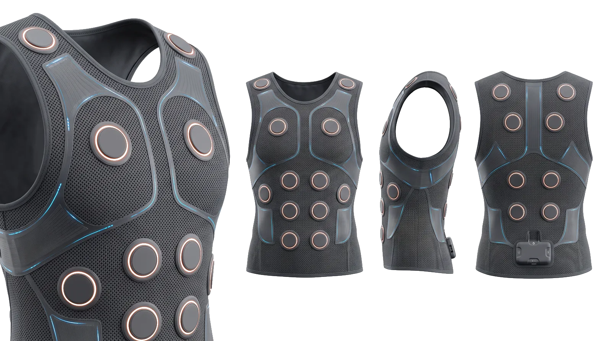
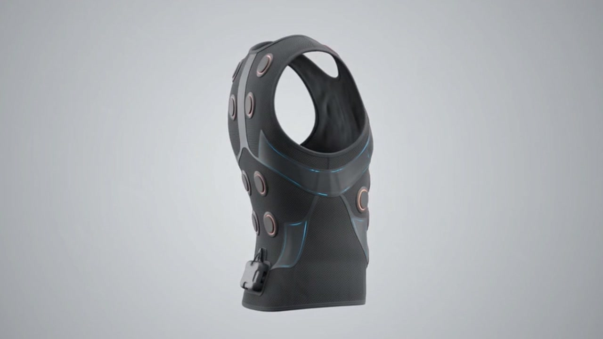

X1 SDK LAB
Connecting to gateway
←

LIVE INTERACTION
Pressure-Triggered Haptic Feedback
Simulated data stream

Chest
Back
Left arm
Right arm
LOOP LATENCY
-- ms
PRESSURE
0.00
N
Manual pressure input
0.40
Send single frame